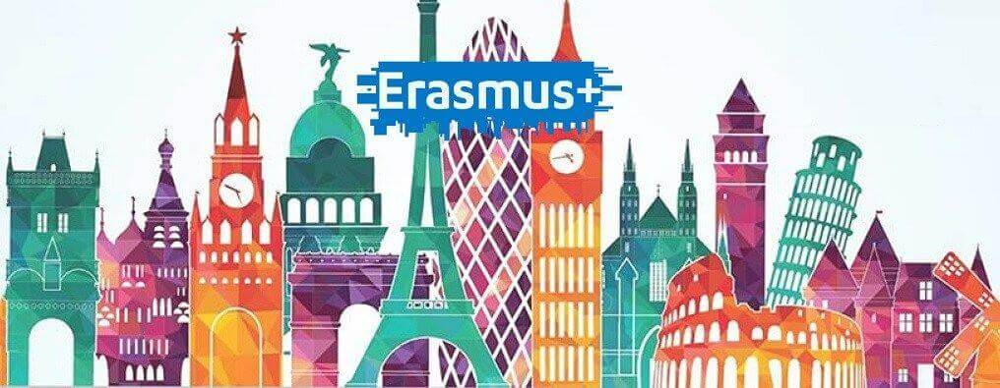
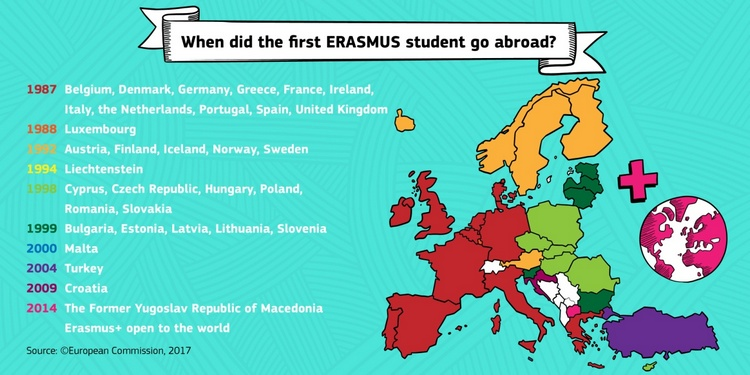

Hemen, Erasmus+ proilektuari buruzko informazio apur bat aurkesten da.
ERASMUS programa ingelesezko EuRopean Community Action Scheme for the Mobility of University Students izen ofizialaren akronimoa da, zein Europar Batasuneko ikasleei beste estatu batuen ikasketak burutzea ahalbidetzen diena.
|  |
ERASMUS+-aren sorrera: Bruselan, 1986ko urtarrilean, sei urtez Europako unibertsitate ikasleen arteko trukeen probak egin eta gero, Erasmus Programaren proposamena Europako Batzordera iritsi zen lehen aldiz. Orduan Batasuneko kide ziren herrialde gehienak alde egon arren, Batzordean pisu gehien zutenek –nagusiki, Frantziak, Alemaniak eta Erresuma Batuak– ordurako bazituzten beren truke-programak eta proposamena baztertzea nahi zuten.
Negoziazio gogor eta luzeen ondoren, azaroaren 28an proposamena atzera bota zuten. Baina hezkuntza erakundeen eta gazte mugimenduen presiopean, gaia berriro iritsi zen Kontseilura abenduaren 15ean. Erasmus Programa handik hiru egunera onartu zuten eta, zenbait formalismo legal gorabehera, ofizialki 1987ko ekinaren 15ean jarri zen abian.
1987-1988 ikasturtean 3.244 ikaslek osatu zuen lehenengo Erasmun belaunaldia. 2006an, berriz, 150.000 ikaslek baino gehiagok baliatu zuten truke-programa, Europako ikasle biztanleriaren ia %1ek. Gaur egun 31 herrialdetako goi mailako 4.000 hezkuntza erakunde baino gehiago daude programaren barruan. 2007an, Erasmusek hogei urte bete zituenean, ordurako bi milioi pertsona baino gehiago ziren programan parte hartu zutenak, eta 2012an hiru milioitara iritsiko zirela aurreikusi zuten.
Baina Erasmus, esperientzia akademikoa baino gehiago, fenomeno sozial bilakatu da.
|  |
Proiektu honen barruan, hainbat proiektu antolatzen dira. Nire kasuan, IES Urritxek Europar Batasunari proposatutako Digistories of Generation Z proiektuan parte hartu dut, zeinetan atzerriko ikasleak hona Zornotzara etortzeaz gain, orri nagusian haurreratu dudan moduan, Txekiara joan naiz.
Hurrengo orrian nire Txekiarako bidaiari buruzko esperientzia azaltzen da.